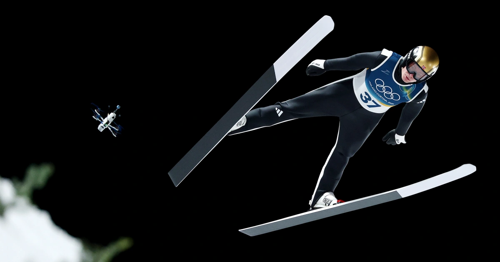
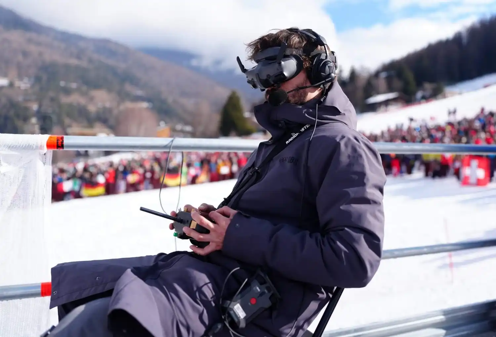

Drone Cams Bring Thrills to Winter Olympics TV



High above the jagged cliffs of Cortina d’Ampezzo, drone pilot Martin Bochatay is every bit as locked in as the Olympic skiers racing below him. He’s the one sending his camera drone screaming through the narrow Tofana schuss, capturing the raw speed and danger that millions watch from their couches.
Bochatay and his crew are part of a small army of pilots whose buzzing little machines now trail Olympians in downhill, luge, snowboarding, ski jumping, and more. The result? Footage that feels almost too real — fast, intimate, and breathtaking. These drones have quickly become one of the breakout stories of the 2026 Milan Cortina Winter Olympics, transforming how fans experience the Games from their living rooms.
“In my mind, I’m not flying a drone. I’m flying with the skiers. You become the drone.”
The technology behind these shots is remarkably advanced yet deceptively simple in appearance. The drones used are custom-built First-Person View (FPV) units, each weighing under 250 grams (about half a pound) but capable of accelerating to speeds exceeding 100 mph (over 170 kph) in seconds. Olympic Broadcasting Services (OBS) deployed a total of 25 drones across the venues—15 dedicated FPV models for athlete-tracking shots and 10 traditional hover drones for wider scenic views. These join over 800 cameras in total to capture every angle of the Games.
Each FPV drone carries two cameras: a high-end broadcast camera controlled remotely by the production team in trucks below the course, allowing instant adjustments for brightness, white balance, and framing; and a lower-resolution feed that streams directly to the pilot’s FPV goggles for real-time navigation. The pilot operates a two-handed controller with joysticks managing pitch (front-to-back tilt), roll (side-to-side lean), yaw (rotation around the vertical axis), and throttle (altitude and speed). It’s a constant, fluid dance of all four inputs at once—no room for hesitation when matching a skier hurtling down an icy chute.

Close enough to feel the wind, but the athletes barely notice
Norwegian downhill star Kajsa Vickhoff Lie says the drones are no distraction. “You might hear them at the start, but once you’re skiing, you don’t notice them at all.” American bobsledder Frank Del Duca called the pilots’ skill “phenomenal” and the footage “a really unique perspective.” U.S. bobsledder Elana Meyers Taylor admitted she got slightly nauseated watching luge footage from the drone view, joking it felt too immersive.
IOC sports director Pierre Ducrey echoed that sentiment: “Looking at the screen in the downhill, I almost feel motion sickness. That’s how much we are able to project ourselves thanks to this new way of broadcasting the sport.” The drones never overtake athletes and must maintain a safe distance, with strict rules enforced by spotters and safety protocols. Pilots undergo weeks of training runs alongside athletes to perfect timing and avoid any interference.
Batteries present a low-tech challenge in the freezing Alpine conditions—they drain quickly at high speeds and must be kept in warming cases between runs. A dedicated “pit stop” crew swaps them in seconds, ensuring seamless coverage across multiple heats or training sessions.
From crash risks to cinematic immersion: The evolution of drone tech at the Olympics
Drones aren’t entirely new to the Olympics—primitive versions appeared over a decade ago, with one infamous incident nearly striking skier Marcel Hirscher during a slalom race. But the 2026 Games mark a leap forward. These lightweight, agile FPV units cost around €15,000 each and represent the first large-scale use of athlete-chasing first-person perspectives at a Winter Olympics. OBS CEO Yiannis Exarchos highlighted how the 15 FPV drones, combined with cinematic workflows and AI-assisted replays, create the most immersive Winter Games broadcast yet.
The goal is dual: showcase the stunning natural beauty of venues like the Dolomites while delivering the athlete’s point of view. Viewers get 360-degree context in replays, volumetric reconstructions, and real-time tracking that makes speeds of 120+ kph feel visceral. For sports like luge and skeleton—where athletes plummet through twisting ice tubes at breakneck pace—the drones provide clearance-tight shots that highlight every turn and wall ride.
Athletes are generally relaxed about the buzzing companions. Norwegian skier Lie appreciates how the footage emphasizes skiing’s core thrill: raw speed. “It’s cool to see the speed a little bit more for the spectators,” she said. Still, some admit the on-screen vertigo can be intense—proof the tech succeeds in closing the gap between viewer and competitor.
Beyond drones, OBS integrated AI for instant replay analysis, cinematic Sony VENICE 2 and BURANO cameras for film-like quality, and virtualized production to streamline feeds across global broadcasters. The result? A broadcast that feels revolutionary, turning century-old sports into edge-of-your-seat spectacles.
As the Milan Cortina Games continue, these drones aren’t just capturing action—they’re redefining how we experience it. Pilots like Bochatay aren’t just operators; they’re co-pilots in the athletes’ quest for gold, delivering views that make every viewer feel like they’re racing down the mountain themselves.


Koepka’s Leap of Faith: What Comes Next After LIV Golf Exit
DECEMBER 24, 2025

Skenes and Skubal Win Cy Young Awards as Future Uncertainty Grows
NOVEMBER 12, 2025


Olympics

SoftBank Sells Nvidia Stake for $5.8B, Shifts Focus to OpenAI
SoftBank made a lot more money in the first half of its fiscal year after selling its entire stake in Nvidia for $5.8 billion. This was part of a strategic shift toward OpenAI.
TECHNOLOGY BY NOVEMBER 10, 2025

Watchdog Group Urges OpenAI to Pull Sora 2 App
Public Citizen told OpenAI to take down their Sora 2 video program because they were worried that the AI-powered app would violate people's rights to their likeness, spread deepfakes online, and endanger democracy
TECHNOLOGY BY NOVEMBER 11, 2025

U.S.–UK Technology Deal Paused as Trade Talks Stall
The U.S. has paused its $40 billion Technology Prosperity Deal with the UK, citing regulatory differences and trade barriers affecting technology and advanced goods amid ongoing negotiations.
TECHNOLOGY BY DECEMBER 17, 2025